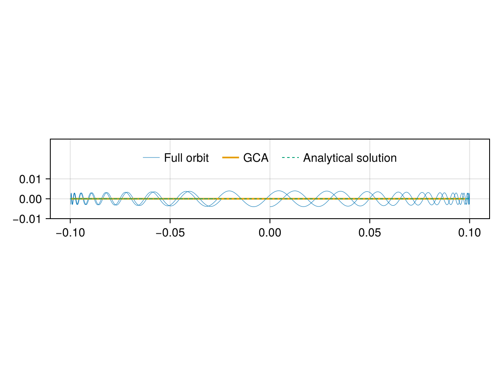
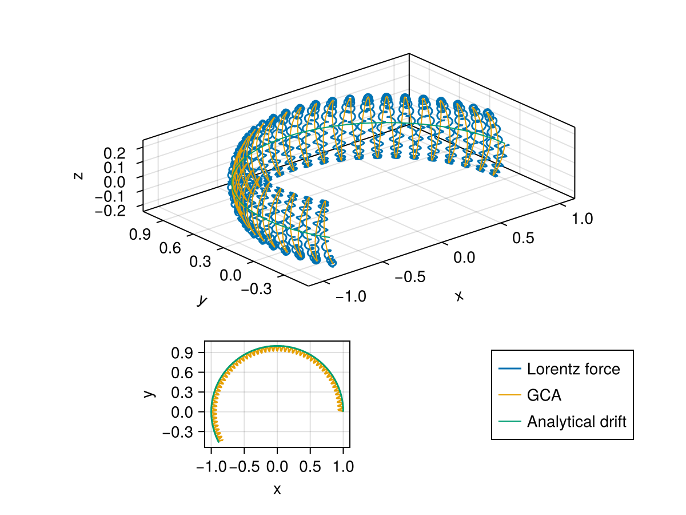
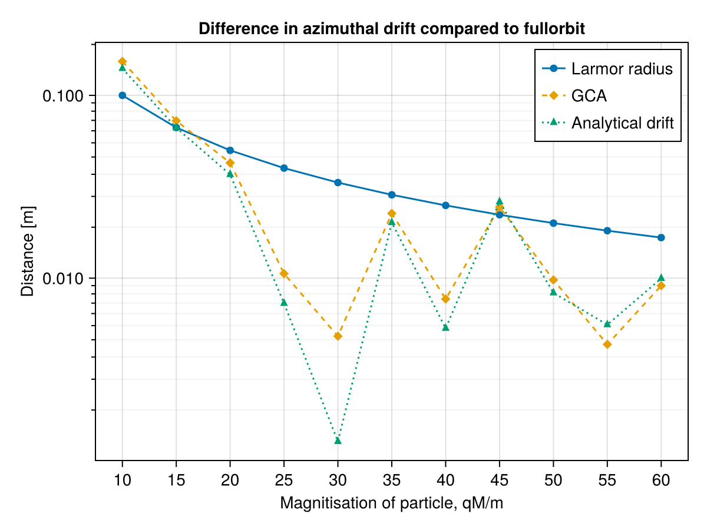
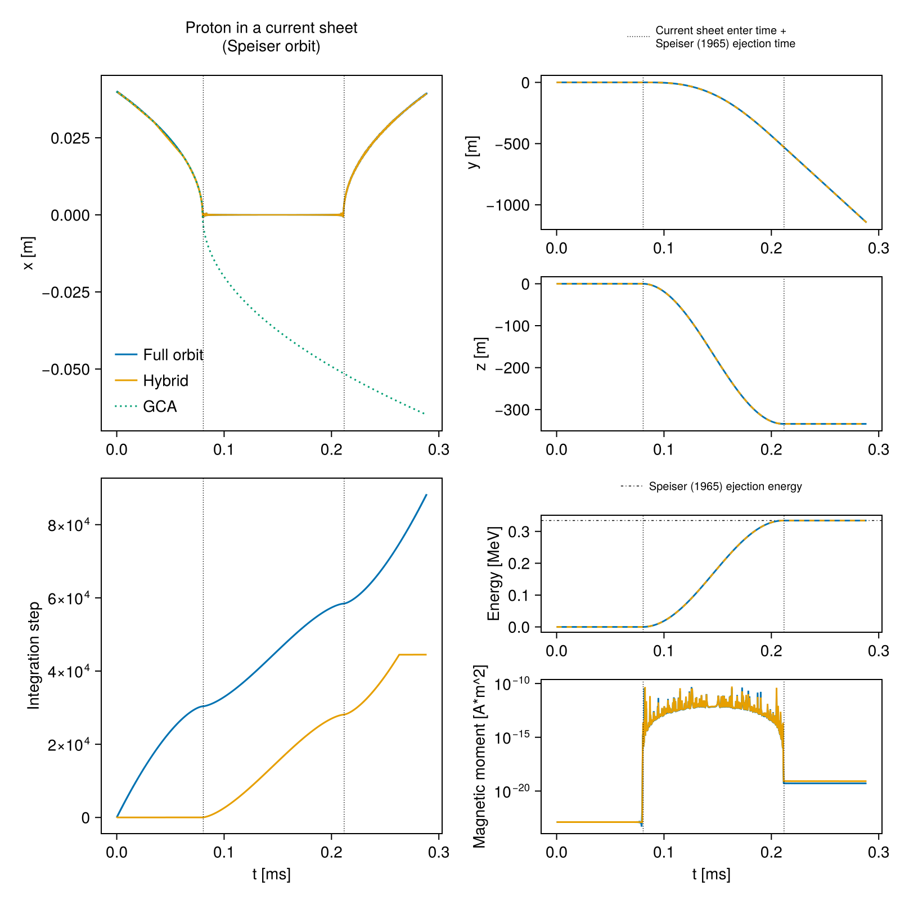

Verification gallery
Magnetic mirroring
Below we simulate a charge particle mirroring in a magnetic bottle.
Theory
When a charge particle experiences changing magnetic field strength, the gyration radius changes. If there is a magnetic field strength gradient in the plane of the gyration, it gives rise to a drift in the direction $\nabla B\times\mathbf{B}$. If the gradient is perpendicular to the gyration (parallel to the magnetic field), the paricle might be mirrored. Why? If the magnetic moment of the particle is conserved as the magnetic field gets stronger, the particle has to gain perpendicular velocity as the Larmor radius decreases. And if the total energy is conserved too, for example if there is no electric field, the parallel velocity must decrease following the increased perpendicular velocity. When the magnetic field becomes strong enough, all the energy will be transfered from the parallel component into the perpendicular, and the particle will be reflected. In other words, in a field with a magnet gradient that i paralell its direction, a charged particle will experience a force in the opposite direction, $F_\text{mirror} \propto \nabla B \cdot \mathbf{B}$.
using OrdinaryDiffEq
using LinearAlgebra
using TraceParticles
using CairoMakie
function magneticbottle(x, y, z; B0, L)
a = B0 * z / L^2
return [-x * a, -y * a, B0 + z * a]
end
B0 = 10.0
L = 0.1
# The electromagnetic field
emfield(x, y, z, t) = zeros(3), magneticbottle(x, y, z; B0=B0, L=L)
# Particle parameters
tf = 1.5
tspan = (0, tf)
mass = 1
charge = 10
# Initial conditions
vel0 = [0.0, 0.4, 0.4]
rL = mass * √(vel0[1]^2 + vel0[2]^2) / (charge * B0)
pos0 = [-1rL, 0.0, 0.0]
E, B = emfield(pos0..., 0)
R0, vparal, μ = get_guidingcentre(pos0, vel0, B, E, charge, mass)
# Create problems
prob_FO = ODEProblem(
lorentzforce!,
[pos0; vel0],
tspan,
(charge=charge, mass=mass, electromagneticfield=emfield),
)
prob_GCA = ODEProblem(
guidingcentreapproximation!,
[R0; vparal],
tspan,
(
charge=charge,
mass=mass,
magneticmoment=μ,
electromagneticfield=emfield
)
)
# Run simulation
sol_FO = solve(prob_FO)
sol_GCA = solve(prob_GCA)
# Analytical solution
function z_analytical(t; μ, m, B0, L, A, ϕ)
ω = √(2μ * B0 / (m* L^2))
return @. A * sin(ω * t + ϕ)
end
Bmax = B0 * norm(vel0)^2 / (vel0[1]^2 + vel0[2]^2)
zmax = L * √(Bmax / B0 - 1)
ϕ = 0
times = range(0.0, tf, length=1000)
analytical = z_analytical(times; μ=μ, m=mass, B0=B0, L=L, A=zmax, ϕ=ϕ)
# Plot
fig = Figure()
ax = Axis(fig[1,1])
lines!(ax, [sol_FO(t)[3] for t in times], [sol_FO(t)[1] for t in times],
label="Full orbit", linewidth=0.5
)
lines!(ax, sol_GCA[3,:], sol_GCA[1,:];
label="GCA", linewidth=2.0
)
lines!(ax, analytical, [0.0 for _ in analytical];
linestyle=:dash, label="Analytical solution", linewidth=1.0
)
ax.aspect = DataAspect()
ax.limits = ((nothing, nothing), (-0.01,0.03))
ax.yticks = ([-0.01,0.00,0.01])
axislegend(ax, position=:ct, orientation=:horizontal, framevisible=false)
fig
Magnetic dipole
A magnetic dipole features magnetic gradient both parallel and perpendicular to the magnetic field direction. The parallell gradients make charge particles mirror from pole to pole, and the perpendicular gradients cause an azimuthal drift. The magnetic curvature further adds drifts in the azimuthal direction. In this example we compare the results of a direct solution to the lorentzforce! and a solution to the guidingcentreapproximation! with an analytical approximation to the azimuthal drift.
using OrdinaryDiffEq: ODEProblem, solve
using LinearAlgebra: norm
using TraceParticles
using CairoMakie
using Printf
function magneticdipole(x, y, z; M)
a = M / (x^2 + y^2 + z^2)^(5 / 2)
return [3a * z * x, 3a * z * y, a * (2z^2 - x^2 - y^2)]
end
# Analytical period for drifting around the whole dipole
function T_dipole(; q, m, M, R0, v0, α)
return @. 2π * q * M / (m * v0^2 * R0) * (1 - 1 / 3 * sin(α)^0.62)
end
# Parameters
tf = 80.0
tspan = (0.0, tf)
mass = 1.0
charge = 1.0
# Initial position is such that vperp is 1 and the guiding centre is
# at x⃗ = [1, 0, 0]. It is also assumed that the GCA is valid such that B is equal
# to B(x⃗) = 2M, directed in -ẑ. We may then compare with the Walt (1994)
# approximation of the azimuthal drift-period.
R0 = [1.0, 0, 0]
vparal = 0.5
vperp = 1.0
# Magnetic dipole strength
M = 40 * mass / charge
"""
dipolesimulation(dipolestrength)
Given a `dipolestrength`, solve the Lorentz equation and the guiding centre
approximation. Also return the analytical drift
"""
function dipolesimulation(dipolestrength)
# Dipole-specific field and initial conditions
emfield(x, y, z, t) = zeros(3), magneticdipole(x, y, z; M=dipolestrength)
E, B = emfield(R0..., 0)
μ = TraceParticles.magneticmoment(vperp, mass, norm(B))
rL = TraceParticles.larmorradius(mass, vperp, charge, norm(B))
u0 = get_fullorbit(B, E, R0, vparal, μ, charge, mass, pi / 2)
# Create problems
fo_prob = ODEProblem(
lorentzforce!,
u0,
tspan,
(charge=charge, mass=mass, electromagneticfield=emfield)
)
gca_prob = ODEProblem(
guidingcentreapproximation!,
[R0...; vparal],
tspan,
(
charge=charge,
mass=mass,
magneticmoment=μ,
electromagneticfield=emfield
)
)
# Run simulation
fo_sim = solve(fo_prob; reltol=1e-7, abstol=1e-9)
gca_sim = solve(gca_prob)
# Analytical result
v0 = norm(u0[4:6])
# Initial pitch angle
α = atan(vperp / vparal)
R0x = R0[1]
T = T_dipole(; q=charge, m=mass, M=dipolestrength, R0=R0x, v0=v0, α=α)
angularfreq = 2π / T
# ϕ is the angle the particle position has with respect to the x-axis when
# projected onto the xy-plane
phi_final_analytical = 2π * tf / T
# Return positions and analytical drift
times0 = range(0.0, tf, length=100)
times1 = range(0.0, tf, length=1_000)
times2 = range(0.0, tf, length=10_000)
return (
length(fo_sim.t),
length(gca_sim.t),
fo_sim(times2),
gca_sim(times1),
R0x * cos.(angularfreq * times0),
R0x * sin.(angularfreq * times0),
phi_final_analytical,
rL
)
end
nt_fo, nt_gca, pos_fo, pos_gca, driftx, drifty, _, _ = dipolesimulation(M)
# Plot
fig = Figure()
ax = Axis3(fig[1:2,1:2]; aspect=:data)
lines!(ax, pos_fo[1, :], pos_fo[2, :], pos_fo[3, :]; label="Lorentz force")
lines!(
ax, pos_gca[1, :], pos_gca[2, :], pos_gca[3, :];
label="GCA", linewidth=1
)
lines!(
ax, driftx, drifty, [0.0 for _ in driftx];
label="Analytical drift", linewidth=1
)
Legend(fig[3,2], ax)
ax.xlabel = "x"
ax.ylabel = "y"
ax2 = Axis(fig[3,1]; aspect=DataAspect())
lines!(ax2, pos_gca[1, :], pos_gca[2, :]; color=Makie.wong_colors()[2])
lines!(ax2, driftx, drifty; color=Makie.wong_colors()[3])
ax2.xlabel = "x"
ax2.ylabel = "y"
@printf("""
Number of integration steps (Lorentz force): %i
Number of integration steps (GCA): %i
""", nt_fo, nt_gca
)Number of integration steps (Lorentz force): 10416
Number of integration steps (GCA): 225fig
The results show that guiding centre approximation holds fine for this magnitisation. Below we rerun the simulation with varying magnetisation and compare the differences in final drift.
# Varying magnetisation
qMm = 10:5:60
dipolestrength = qMm * mass / charge
# (... see source file for all the code ...)fig2
Dynamics at a current sheet (Speiser orbit)
Speiser (1965) developed analytical expressions describing the motion of charge particles in simple current sheets. These expressions can be compared with numerical simulations. In the field
\[\begin{equation} \begin{split} \mathbf{B}(x) &= -b(x/d) \hat{y} \\ \mathbf{E} &= -a\hat{z} \end{split} \end{equation}\]
the particle drifts towards the magnetic null on either side. At the null, it becomes demagnetised, and will oscillate around the magnetic field reversal line wwhile being accelerated by the electrical field along the current sheet in the $z$-direction. The oscillation is damped and Speiser derived that the amplitude evolves as $1/t^{1/4}.$ He also found that when an extra component is added to the magnetic field, perpendicular to the current sheet
\[\begin{equation} \mathbf{B}(x) = -b(x/d) \hat{y} + b\eta\hat{x}, \end{equation}\]
the particle will be ejected out of the current sheet when the oscillation is bent by 90 degrees. The ejection time was approximated to be $\tau = m\pi/qb\eta$ and the $y$-velocity at the ejection (for $\dot{y} \ll c$) would be $\dot{y}(\tau) \approx -2a/b\eta$. In this example, we simulate the "Speiser-orbit" of a proton using both lorentzforce!, hybridgcafo! and guidingcentreapproximation!.
First, we define the current sheet electromagneticfield, and the proton's initial conditions.
"""
linearisedharrisheet(x; η, d, g, b)
- η: Strength of component normal to the current sheet: η*b
- d: Current sheet width: |B/∇B| = d (with η = 0)
- g: The guide field strength: g*b
- B0: Characteristic field strength
)
A magnetic field configuration with a y-component that reverses at x=0.
Equivalent to the Harris current sheet in the regime x/d << 1.
||| || | | | | || |||
y ||| || | | | | || |||
^ ||| || | | | | || |||
| ||| || | | | | || |||
|/ ^^^ ^^ ^ ^ v v vv vvv
-|-----> x ||| || | | | | || |||
/ ||| || | | | | || ||| η = 0
/ ||| || | | | | || |||
z ||| || | | | | || |||
"""
function linearisedharrisheet(x; η, d, g, b)
return [η, -x / d, g] * b
end
b = 1e-2 # [Tesla]
η = 0.025
d = 1e-4 # [meter]
g = 0.0
v0 = 1e7
a = 1e-2 * v0 * b # [V/m]
function currentsheet(x, _, _, _)
return [0, 0, -a], linearisedharrisheet(x; η=η, d=d, g=g, b=b)
end
mass = proton_mass # [kg]
charge = proton_charge # [C]
t_eject = π * mass / (charge * η * b) # [s]
velyτ = - 2.0 * a / (η * b) # [m/s]
L0 = 1e4 # [m]
vel0 = [0.0, 0.0, 0.0] # [m/s]
pos0 = [4e-6, 1e-10, 1e-10] * L0
t0 = 0.0 # [s]
tf = 2.2 * t_eject # [s]
tspan = (t0, tf)Next, we define a function that builds all three ODE-problems and solve them.
function run()
# Direct solution
prob = ODEProblem(
lorentzforce!,
[pos0; vel0],
tspan,
(
charge=charge,
mass=mass,
electromagneticfield=currentsheet
)
)
# Hybrid scheme
hprob = ODEProblem(
hybridgcafo!,
[pos0; vel0],
tspan,
# This parameter-struct allocates arrays for information on the
# EoM-switching. E.g. time at switch, magnetic moment after switch,
# EoMID after switch.
HybridParamsWithDetection(
charge=charge,
mass=mass,
electromagneticfield=currentsheet,
getphase=(integrator) -> π / 2,
initialeomid=EoMID.FullOrbit,
)
)
# Guiding centre approimation
R, vparal, mu = get_guidingcentre(
pos0,
vel0,
currentsheet(pos0..., t0)[2],
currentsheet(pos0..., t0)[1],
charge,
mass
)
gcaprob = ODEProblem(
guidingcentreapproximation!,
[R..., vparal],
tspan,
(
charge=charge,
mass=mass,
electromagneticfield=currentsheet,
magneticmoment=mu,
)
)
hcb = DiscreteCallback(
# Arguments of the condition represent:
# magnetic gradient tolerance, magnetic curvature tolerance, parallel
# elctric field strength tolerance, and switchback tolerance.
HybridSwitchCondition(2e-3, 2e-3, Inf, 0.9),
TraceParticles.hybridswitchaffect_withdetection!
)
# Solve the problems
# Avoid implicit solvers for `lorentzforce!`- and the
# `hybridgcafo!`-equations the gyrating motion is oscillatory, not
# necessarily stiff.
@time fosol = solve(
prob,
Vern9(),
reltol=1e-7
)
# Avoid stiff-detecting solvers for the `hybridgcafo!`-equations explicitly
# because its design (setting `u[5:6] = 0.0` when switching to the GCA) will
# trigger stiffness-detection. Pin an explicitic solver.
#
# Also, turn`lazy=false` if you want to interpolate the solution with
# `sol(t)`. With `lazy=true` the interpolation will evaluate
# `f(..., t, p...)` post-simulation and the mutated `p` will not match `t`.
@time hsol = solve(
hprob,
Vern9(lazy=false),
reltol=1e-7,
callback=hcb,
)
gcasol = solve(gcaprob)
return fosol, hsol, gcasol
endrun (generic function with 1 method)Now we run the simulation,
fosol, hsol, gcasol = run() 7.030628 seconds (61.58 M allocations: 2.535 GiB, 16.79% gc time, 61.98% compilation time)
14.203004 seconds (77.48 M allocations: 3.531 GiB, 11.60% gc time, 79.61% compilation time)compute the evolution of the kinetic energy and the magnetic moment (using TraceParticles.get_observable),
# Energy in MeV
t = range(t0, tf, 1_000)
foenergy = get_observable(fosol, :energy, times=t, EoM="FO") / 1e6
henergy = get_observable(hsol, :energy, times=t) / 1e6
# Magnetic moment
fomagneticmoment = get_observable(fosol, :magneticmoment, times=t, EoM="FO")
hmagneticmoment = get_observable(hsol, :magneticmoment, times=t)and finally plot the result – displaying the evolution of the proton's position, kinetic energy, and magnetic momentum. The number of integration steps used is shown in the lower left panel.
fig = plotspeiserorbit(
fosol,
hsol,
gcasol,
foenergy,
henergy,
fomagneticmoment,
hmagneticmoment,
t,
)
From the evolution of the $x$-position, we see the accelerating $\mathbf{E}\times\mathbf{B}$-drift towards the magnetic field reversal line, where the proton starts to accelerate in the $z$-direction and oscillate in $x$.
At this point, the guiding centre approximations fails to follow the full orbit trajectory, and the hybrid scheme starts to burn through integration steps at the same speed as the direct solution. This indicates that the proton is demagnetised, and that the hybrid scheme switches away from the GCA at an appropriate time.
The oscillation in $x$ is due to the magnetic force, and Speiser derived the particle acceleration to be
\[\begin{equation} \begin{split} \ddot{x} &= -kx \\ \ddot{y} &= b \frac{q}{m}\eta \dot{z} \\ \ddot{z} &= -a\frac{q}{m} - \frac{q}{m}\frac{b}{d} x\dot{x} - b\frac{q}{m}\eta\dot{y} \end{split} \end{equation}\]
where the "spring constant" is $k = (q/m)(b/d)\dot{z}$. With an initial $\dot{y} = 0$, $\dot{z}$ becomes negative and falls like $~t$. This makes the $x$-oscillation to damped. However, $B_x$ (which is significant in the current sheet) makes the proton accelerate in $y$. The $y$-acceleration redirects the energy away from the $z$-component, and $\ddot{z}$ – having a term proportional to $- \eta \dot{y}$ – eventually becomes zero and negative. Consequently, $\dot{z}$ decreases towards zero. When it hits zero, the $x$-oscillation turns unstable and the proton is ejected out of the current sheet with an increased energy in the $y$-component.
The hybrid solution show good agreement with the direct solution in all state variables shown in the plot. The only visible mismatch is the final magnetic moment, which demonstrate the hybrid scheme's sensitivity to the switching tolerances. The longer the hybrid scheme tolerates the guiding centre approximation, the more erroneous the magnetic moment will be. On the other hand, the benefit of using a hybrid scheme is clear from the lower left panel, where the number of integration steps are decreased by ~1000x in the guiding centre regime, reducing the number of steps by half, overall.